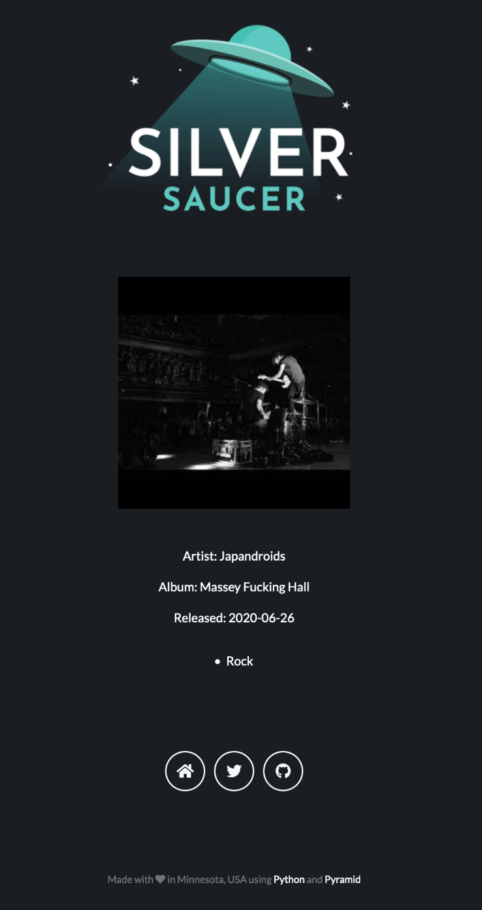
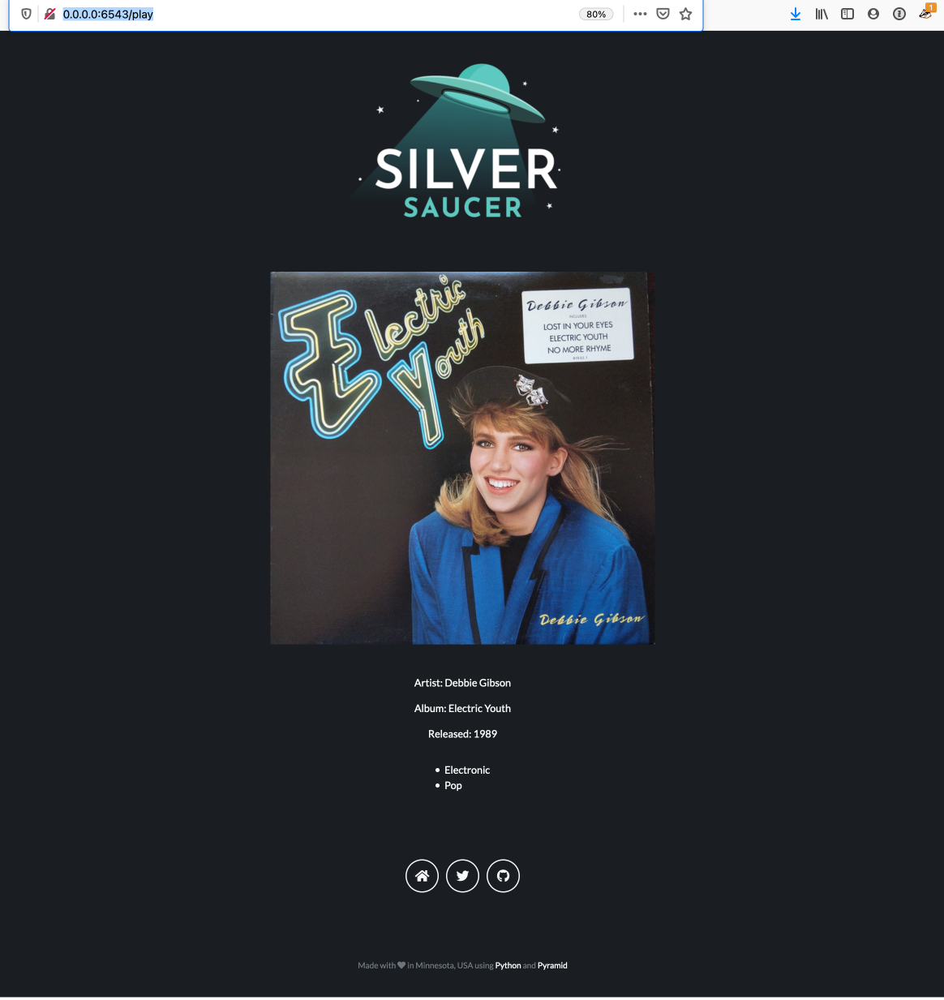

Displaying the Album Information
In my last blog post, I was able to pass the folder to Discogs to get a list of albums, and then pick one at random and give me information back about the album picked. That information was returned as a dictionary and now it is time to wire it up to the Chameleon template in Pyramid that will display the HTML.
Here’s an example of the JSON:
{'release_title': 'Massey Fucking Hall', 'release_uri': 'https://www.discogs.com/Japandroids-Massey-Fucking-Hall/release/16118824', 'artist_name': 'Japandroids', 'artist_url': 'https://api.discogs.com/artists/1473872', 'release_date': '2020-06-26', 'discogs_main_id': 1829048, 'discogs_main_url': 'https://api.discogs.com/masters/1829048', 'main_release_date': 2020, 'release_image_uri': 'https://img.discogs.com/BVmRNi_A5_Vm8X0ntzUDh8figvE=/fit-in/300x300/filters:strip_icc():format(jpeg):mode_rgb():quality(90)/discogs-images/R-16118824-1604177632-7503.jpeg.jpg', 'genres': ['Rock']}
In the controller that handles the routing for the page I have:
def play(_):
album_release_id = RandomRecordService.get_folder_count(2162484)
print(album_release_id)
release_data = RandomRecordService.get_album_data(album_release_id)
print(release_data)
return {"release_info": release_data}
It was way easier than expected. (And if you know me, you know that the random record picked above is perfect, as I’m a huge Japandroids fan.) The first thing I did was connect the image URI that the Discogs API passes in the Chameleon template:
<img class="mb-5" src="${release_info.release_image_uri}" alt="${release_info.release_title}" />
That worked, which was awesome. The whole image is shown, and I don’t have to worry about parsing any of the URL.
I quickly added the values to show the Artist, Album, and Release Date information:
<p>Artist: ${release_info.artist_name}</p>
<p>Album: ${release_info.release_title}</p>
<p>Released: ${release_info.release_date}</p>\
It looks like this:

Looking at Debbie Gibson’s Electric Youth, the Genre key in the dictionary returns a list:
'genres': ['Electronic', 'Pop']
With some trial and error I was able to display the list, but it showed up as code, looking like:
['Electronic', 'Pop']. No one wants to see that. The challenge is that Chameleon templates use something like a
shorthand for Python code. I revisited two of my former projects where I would iterate over a list and show the
results, but after lots of trial and error I felt like I was going backwards. Some more search engine queries and
Stack Overflow searching I did what I always do when I get stuck: I asked my wife. It took her about 15 minutes to
figure out how to loop over the list and show it in bullets:
<p><li tal:repeat="item release_info.genres" tal:content=item/>
I was so close - she pointed out the mistake I made with having two tal:repeat methods in the template. That’s what’s
hard about the trial and error method of finding the solution, especially as I wasn’t writing down the methods
that kind of worked. (Oops. Usually I have a note going in Bear to capture things like this, but sometimes you get in
the zone and just keep trying things as you get closer. Documentation is good!)
Lastly, I changed the image size of the album image returned from Discogs, shrinking it from 400x400 to 300x300 and it seems to fit in the Bootstrap container better. You can see the difference with Debbie Gibson’s Electric Youth below at 400x400 and Japandroids at 300x300 above.

Now I have lots of cleanup to do. I need to turn the text into links, for example if you click on the artist, Japandroids, it takes you to their page on Discogs. I also need to fix how it justifies and draws the bullets. I think almost all of this is done in CSS and I don’t know CSS at all… (I had to cheat to make the text color white to show up on the page already.)
Random thoughts and musings:
- Every time the page loads, it refreshes the API call. So if you click a link to the artist page on Discogs, for example, and then click the back button, that album data has been replaced. Not sure how to work around that, though I have some ideas. Probably a good question in IRC with the Pyramid team.
- I like Chameleon templates. Not only is it the first template language I’ve learned, I’ve looked at Jinja templates and they look harder to use. They’re used much more widely and that seems to lead to better documentation, but I don’t have plans to change from Chameleon.
- I had more thoughts, but I’m finishing up this blog post almost a week later as my internet went out.
- The Release Date returned from Discogs has the same problem I’ve already talked about for the future “On This Day” feature I want to add. It could be just the year or the full release date, you never know what you’re going to get. Look at the two screenshots above! I don’t know if I want to add all the functionality to return the “correct” release date yet. I’m worried about how long the API calls take to load the page. (Even if it’s just for me and I know how long it takes, I don’t want it taking long.)